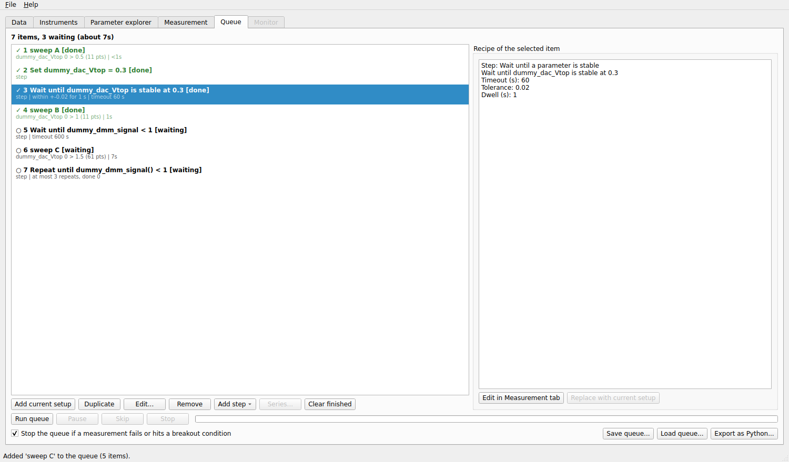
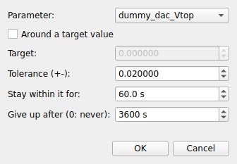
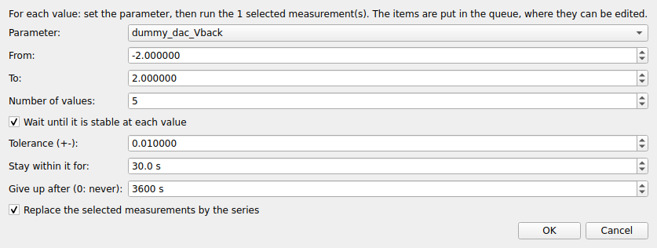

Queue tab
The Queue tab runs several measurements one after the other, with steps in between (wait until the temperature is stable, set a gate, repeat until a condition holds). Set it up in the afternoon, let it run through the night.


A queue of three measurements with steps between them. The first items are done (✓); the last ones are waiting (○).
The list
Each item of the list is either a measurement (a recipe: the whole setup of the Measurement tab) or a step. It shows a status mark and the number of the item, its title, and a second line (the axes and the estimated time of a recipe; the settings of a step). The marks are:
Mark |
Status |
|---|---|
○ |
waiting |
▶ |
running |
✓ |
done |
■ |
stopped |
✗ |
failed |
» |
skipped |
The box on the right shows the recipe or the step of the selected item, and how it ended (a message such as stopped by the user, the breakout condition that ended it, the runs it wrote).
Adding measurements
Set a measurement up in the Measurement tab, then click Add to queue there (or Add current setup here). The setup is copied: changing the Measurement tab afterwards does not change the item. To change an item, select it and click Edit…: its recipe is loaded in the Measurement tab; change it and click Update item there (or Replace with current setup here).
Duplicate copies the selected items, Remove (or the Delete key) removes them, and you reorder by dragging. The item that is running stays where it is. Clear finished removes the items that are done, stopped, skipped or failed.
Steps
Add step adds a step after the selected item (at the end if none is selected):


- Wait a fixed time
Waits that many seconds.
- Wait until a parameter is below / above
Waits until the parameter reads below (above) a value, with an optional timeout.
- Wait until a parameter is stable
Waits until the parameter stays within a tolerance for a dwell time, around a target value if you tick that box. Use it to wait for a temperature or a magnetic field.
- Set a parameter
Brings a parameter to a value, at its maximum ramp rate.
- Repeat the measurement above until
Put it right after a measurement. It evaluates a Python condition of the experiment parameters (
T() > 10): while it is false, the measurement before it and this step are queued again, up to the number of repeats you set.
A wait with a timeout that is not satisfied in time fails the item (and, by default, stops the queue): better than waiting for ever. Steps use the same waiting helpers as the actions of the advanced settings.
Series over a parameter
Series… repeats the selected measurements for several values of a parameter: a map at several magnetic fields, a sweep at several temperatures.


For each of Number of values values between From and To, the queue gets a set step, optionally a wait until stable step at that value, and a copy of the selected measurements. You can replace the selected measurements by the series. The items are ordinary queue items, so you can edit them afterwards.
Running the queue
- Run queue
Runs the waiting items one after the other, from the top. Started during a measurement made by hand, it starts when that measurement has ended. Right-click an item and choose Run only this one to run a single item.
- Pause
Pauses the measurement in progress after its current point.
- Skip
Ends the item in progress cleanly (what is written stays) and goes on with the next one.
- Stop
Ends the item in progress cleanly and does not start the next ones.
A bar and the text item n of N show the progress of the whole queue. The box Stop the queue if a measurement fails or hits a breakout condition chooses what happens then: ticked, the queue ends (a gate that leaks should not be followed by the next measurement); not ticked, it goes on with the next item. Before each measurement starts, the same check as Check setup runs: a measurement that cannot work (a sweep outside the safe limits, a parameter that cannot be read) fails its item at once with the reason, instead of starting.
If the program stops while the queue runs (a crash, a power cut), the next start offers to restore the queue: the finished items keep their status, and the one that was running waits again, or is left out, as you choose. Nothing starts by itself: load the instruments, check them, then press Run queue. A measurement cannot resume in the middle of a sweep, so the interrupted item runs again from its start; the data it had written stays in the database.
Saving, loading and exporting
Save queue… writes the recipes to a file and Load queue… replaces the queue by the recipes of a file, so that a good sequence can be reused.
Export as Python… writes a Python script that runs the measurements of the queue, in order, with plain QCoDeS dond(...)
calls: the station file, the experiment parameters, the sweeps, repetitions, actions, datasets, export and breakout conditions.
The script needs QCoDeS and your station file, not the mesoscoPy program itself, so a measurement can be repeated, or shared,
outside the program.